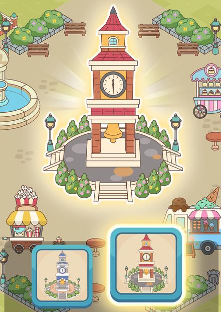
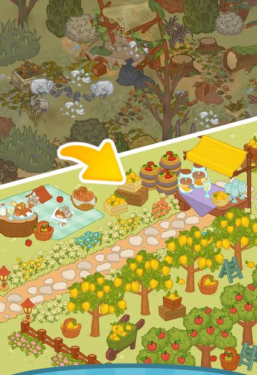
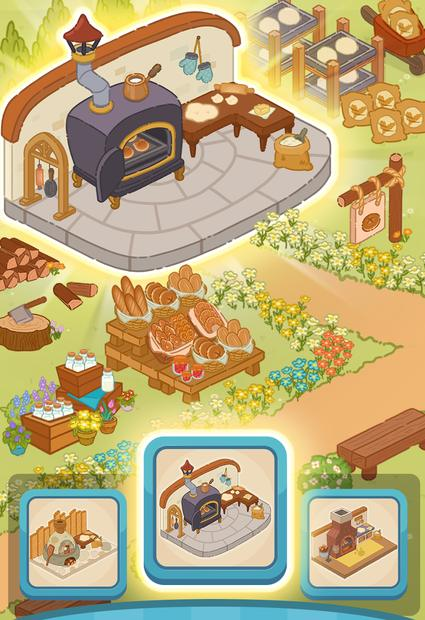

기존 머지 3종 — 시스템 대조 최신순. 3종 다 오픈형이고, 갈리는 건 그 위에 얹은 레이어뿐
| 시스템 | Merge A2025-06 · 최신 | Merge B2023-12 | Merge C2023-01 |
|---|---|---|---|
| 메타 구조 | 오픈형 연속 맵 | 오픈형 연속 맵 | 오픈형 연속 맵 |
| 영역 확장 | 맵 내 빈 스팟 건설 | 영역 단위 리노베이션 | 잠금 영역 개방 |
| 데코 선택 | 조사 중 | 스팟별 3종 택1 | 스팟별 3종 택1 |
| 스토리 레이어 | 정지컷 에피소드 | 없음 | 없음 |
| 진행 게이트 | 에너지 + 회복 타이머HUD 실측 | 조사 중 | 조사 중 |
| 오더 표시 | 상단 슬롯 3개 + 맵 위 말풍선 | 조사 중 | 조사 중 |
| 보드 | 대형 + 잠금 타일 | 조사 중 | 조사 중 |
| 재화 | 코인 + 젬 2종HUD 실측 | 조사 중 | 조사 중 |
| 아트 계열 | 3D CG 인물 + 아이소메트릭고채도 | 플랫 벡터 아이소메트릭 | 플랫 벡터 아이소메트릭파스텔 저채도 |
굵은 칸이 실제로 갈리는 축입니다 — 최신작 A만 스토리 컷신·대형 보드·3D CG 인물을 갖고 있습니다. 메타 구조는 3종이 동일하므로 노하우는 그대로 이어지지만, 웹에서 비싼 쪽이 정확히 그 오픈형입니다(§5). "조사 중"은 추가 확인 진행 중인 항목입니다.
Merge A — 오픈형 + 스토리 (최신)


Merge B


Merge C



네이티브에서의 전제 웹에서 재검토가 필요한 것 — 빈 항목은 확인 대기
| 전제 | 관찰된 근거 | 웹에서 문제되는 이유 |
|---|---|---|
| 세로 고해상도 원본 | 스토어 스크린샷 전부 1080×1920 | 웹 디자인 해상도는 720대 → 1080 기준이면 픽셀 2.25배 |
| 연속 아이소메트릭 맵 | 3종 모두 | 맵이 이어지면 아틀라스·번들 경계를 그을 수 없음 |
| 스팟별 3종 택1 | A·C 스크린샷 | 같은 좌표에 3배 물량. 선택 안 된 것도 같은 아틀라스에 실릴 수 있음 |
| 고채도 3D CG | B의 인물 컷신 | 그라데이션은 팔레트 양자화가 안 통함 → 압축 여지 상실 |
| 기기 티어별 에셋 세트 | 확인 필요 | 웹은 세트가 늘면 총 배포량이 늘어 역효과 |
| 이미지에 구운 텍스트 | 확인 필요 | 런타임 10언어 + RTL이면 언어당 배로 |
웹에서 깨지는 것 병목이 GPU가 아니라 CPU 디코드다
| 로딩 24초의 구성 | 비중 | 실제 정체 원인 | 축 |
|---|---|---|---|
부팅 + index.js(2.8MB) 다운로드·파싱 |
45% | JS 파싱 + 네트워크 | CPU + 네트워크 |
| 진입 팝업 preload | 24% | 텍스처 디코드 | CPU |
| 메인 화면 최초 표시 | 16% | 텍스처 디코드·활성화 | CPU |
| 서버 로그인 체인 | 12% | 서버 왕복 | 네트워크 |
| 기타 팝업 | 4% | — | — |
2·3번(합 40%)은 대역폭을 두 배로 늘려도 안 줄어듭니다 — 받아온 PNG를 CPU가 펼치는 시간입니다. 4번은 CPU를 조여도 안 커집니다. 저사양 기기는 단일 스레드라 디코드를 겹쳐서 상쇄하는 것도 효과 0이었습니다.
| 직관 | 판정 | 실측 |
|---|---|---|
| 서버가 느려서 로딩이 길다 | 기각 | 서버는 12%. 최적화 시도 5건 전부 롤백 — 크리티컬 패스가 아니었음 |
| 아틀라스로 모으면 빨라진다 | 기각 | 총 픽셀이 안 줄면 디코드 시간 불변(0) |
| brotli로 압축돼 오니 이미지 용량은 덜 중요하다 | 기각 | PNG는 이미 deflate. 재압축 절감 0.1~0.4% |
사내 문서에 "1.2MB 아틀라스는 brotli면 261KB"라고 적혀 있었고, 그 근거로 아틀라스 재분할이 기각됐습니다. 실측했더니 4.7배 틀린 값이었습니다 — brotli는 텍스트에 먹고 PNG에는 안 먹습니다. 이미지 용량 판단은 DevTools Network의 transferred 값으로만 합니다. (그렇다고 재분할이 정답이 된 건 아닙니다 — 총 픽셀이 줄지 않으면 이득은 여전히 0입니다.)
아직 안 당긴 레버 — 압축
| 아틀라스작은 스프라이트 세트 5종 | 현재 | 256색 팔레트 | WebP q90~92 |
|---|---|---|---|
| A — 165×985 | 177.1KB | 32.5KB 33.1dB | 42.5KB 32.8dB |
| B — 128×949 | 132.7KB | 21.9KB 36.1dB | 44.0KB 39.2dB |
| C — 220×906 | 86.2KB | 32.8KB 34.5dB | 35.7KB 31.6dB |
| D — 110×453 | 61.0KB | 6.8KB 34.6dB | 5.5KB 34.2dB |
| E — 44×163 | 8.7KB | 2.6KB 37.6dB | 3.8KB 37.1dB |
| 합계 | 465.7KB | 96.6KB (−79%) | 131.5KB (−72%) |
벤치 프로젝트 빌드는 PNG 86장 중 81장이 RGBA8888, 팔레트는 2장뿐입니다.
오토 아틀라스의 platformSettings가 비어 있어 양자화·WebP 프리셋이 한 번도 적용된 적이 없습니다.
단 괄호의 dB는 화질입니다 — 평면 색은 팔레트로 내려도 되지만 그라데이션·글로우는 밴딩이 보입니다.
그래서 §6-5에서 에셋별 티어 표기를 요청합니다.
네이티브 vs 웹 좌측은 관행(수치 없음), 우측만 실측
| 축 | 네이티브 앱 | 웹 / Facebook Instant Games |
|---|---|---|
| 최초 진입 | 설치 1회 → 이후 로컬 | 매 진입이 네트워크. 부팅 45%가 다운로드+파싱 |
| 용량 한계 | 수백 MB + 추가 다운로드 | 부팅 index.js 2.8MB로 45% |
| 텍스처 포맷 | ETC2/ASTC/PVRTC — GPU 압축, 디코드 공짜 | GPU 압축 못 씀 → PNG·WebP, CPU 디코드가 비용 |
| 병목 | GPU / 메모리 | CPU 디코드 + JS 파싱 (24%+16%) |
| 해상도 전략 | 기기 티어별 세트 | 저해상도 티어 번들 일부, 기본 1× 단일 |
| 화면 | 세로 고정, 해상도는 기기 그대로 | 세로지만 한 축은 항상 가변 — 가로 720 고정 / 세로 1280~1559 |
| 폰트 | 시스템 폰트 자유 | woff2 1종 — 폰트 대기가 로딩 후보 |
| 공유 표면 | 스토어 스크린샷, 딥링크 | 플랫폼 오버레이 XML + 공유 이미지 — 아틀라스 밖 원본 |
| 이름·사진 | 엔진 렌더 | DOM 오버레이 — 엔진 위 별도 레이어 |
| 로컬라이즈 | 스토어별 빌드 | 런타임 10언어 · RTL 포함 |
| 갱신 | 업데이트 + 심사 | 배포 즉시. 단 프리로드가 빌드 해시를 물어 유지비 발생 |
오픈형 vs 단편형 메타 구조가 리소스 설계를 먼저 결정합니다
소재가 아니라 "한 화면에 이어져 보여야 하는가"입니다. 단일 건물이어도 방 단위 독립 씬이면 단편형이고, 스토리가 에피소드여도 맵이 연속이면 오픈형입니다. 이게 곧 아틀라스·번들 경계를 그을 수 있는지를 결정합니다.
실측 비용 — 사내 라이브 게임에서 빌린 숫자
| 영역 1개 추가 시 | 바이트 | 픽셀 | 언제 받는가 |
|---|---|---|---|
| 데코 오브젝트 아틀라스 | 933.7KB | 1.724Mpx | 온디맨드 |
| 영역 배경 원본 | 160.7KB | 1.920Mpx | 온디맨드 |
| 저해상도 프록시 | 21.0KB | 0.335Mpx14장 평균 | 인트로 |
| 조망 화면 썸네일 | 170.9KB | 0.094Mpx | 진입마다 전량 |
| 합계 | 1,286KB | 4.073Mpx | 이 중 약 85%가 온디맨드 |
"영역이 늘면 초기 로딩이 무거워진다"고 예상했는데 반대였습니다. 영역 원가의 약 85%는 온디맨드라 영역이 30개가 되어도 진입 비용은 그만큼 안 늘어납니다. 선형 비례하는 건 조망 화면 썸네일 하나뿐입니다 — 진입마다 전량 로드되므로 영역당 170.9KB × 28개면 4.67MB가 매 진입에 붙습니다.
측정한 게임에는 텍스처 해제 호출이 0건이고 씬 전환 자체가 없습니다 — 영역을 바꿀 때 노드만 파괴되고 텍스처는 남습니다. 오픈형은 완성한 영역도 계속 보여야 하니 내릴 명분이 없습니다. 웹에서 이 차이는 저사양 기기의 세션 후반 안정성으로 직결됩니다.
축별 대조
| 축 | 오픈형 | 단편형 |
|---|---|---|
| 총 라이브러리 | 선형 누적 | 선형 누적 — 둘 다 같음 |
| 동시 상주(peak) | 함께 자란다 — 상한이 뷰포트뿐 | 상수 — 실측 씬당 2~4MB / 약 16Mpx |
| 아틀라스 경계 | 맵이 이어져 못 자름 → 공유 아틀라스 강제 | 씬 = 아틀라스 |
| 번들 경계 | 영역 단위로 자르면 공유 에셋 중복 다운로드 위험 | 씬 단위로 자연스럽게 잘림 |
| 언로드 | 명분 없음 → 세션 내 누적 | 씬 이탈 시 해제 가능 |
| 선형 비용 | 조망 화면 — 170.9KB/영역, 진입마다 전량 | 목록이 얕아 선형 비용 작음 |
| LOD | 조망 화면에 필수 | 덜 필요 — 볼 씬이 하나 |
| 아트 물량 | 스팟별 3종이면 같은 자리에 3배 | 씬당 전/후 2세트 |
| 웹 위험도 | 높음 | 중간 씬 진입 스파이크 |
측정한 프록시는 크리티컬 패스를 −87% 줄였지만 세션 총량은 영역당 +21KB 늘었습니다 — 프록시가 메인 배경으로 쓰이고 원본은 영역 진입 때 또 받기 때문입니다. 순서를 바꿔 첫 액션을 앞당긴 것이지 받는 총량을 줄인 게 아닙니다. 섞어서 보고하면 판단이 틀립니다.
영역 썸네일이 소스 1.88MB → 빌드 2.34MB(+24.3%). 팔레트 PNG였는데 아틀라스로 합치면서 RGBA8888로 재인코딩됐습니다. 이미 잘 압축된 이미지를 아틀라스에 넣으면 압축이 풀립니다.
웹 배포 선례 — 조건이 같은 게임


| DesignVille 실측 | 값 | 함의 |
|---|---|---|
| 번들 구성 | 98개 중 씬 번들 89개 | 씬 1개 = 번들 1개. 씬 경계가 곧 배포 경계 |
| 씬 1개 | PNG 24장 2.92MB / 16.21Mpx | 진입 스파이크가 이 크기. RGBA 환산 약 65MB |
| 텍스처 포맷 | 씬 텍스처 전량 8bit 팔레트 | §3의 −79%를 라이브가 이미 채택. 우리만 안 하는 것 |
| 공유 vs 전용 | 공유 번들 PNG 1,038장 90.33MB | 보드·캐릭터·UI만 공유, 씬은 100% 전용 |
| 슬롯 × 변형 | 슬롯 35 × 변형 3 → 아이템 119장 + 상점 썸네일 68장 | 변형 하나당 인게임 + 상점 2렌디션 — 물량 산정에서 빠지기 쉬움 |
위험한 조합
| 위험 | 조합 | 이유 |
|---|---|---|
| 최악 | 단편형 + 완성 씬 모아보기 | 단편형의 유일한 이점(언로드)이 죽음. 진행할수록 무거워짐 |
| 높음 | 오픈형 + 가변 축 대형 배경을 원본으로 | 부팅 45% / 디코드 40% 구간을 직접 확대 |
| 높음 | 슬롯 × 변형 × 렌디션 곱셈 | 슬롯당 6장. 오픈형에 곱하면 peak가 곱셈 → 변형은 틴트·팔레트 스왑으로 |
| 중간 | 씬 전용 에셋을 공용 아틀라스에 | 사내 선례 — 나중에 뗄 수 있는 아틀라스가 0장 |
| 중간 | 구운 텍스트 × 변형 × 10언어 | 3중 곱셈. 데코 아트에 문자 금지 |
오픈형에서 선형 비례하는 유일한 비용은 목록 썸네일이었고, 단편형을 망치는 유일한 패턴은 완성 씬 모아보기였습니다. 둘 다 "전체를 한눈에 보여주는 화면"입니다. 어느 구조든 맵보다 조망 화면을 먼저 설계해야 합니다 — 페이징할지, 프록시를 쓸지, 몇 개까지 동시에 띄울지. 이게 정해지기 전엔 아트 물량도 번들 경계도 못 정합니다.
DesignVille 규모(씬 89개 × 약 3MB + 공유 90MB)는 자체 도메인 배포라 상한이 없습니다. Facebook Instant Games의 총량 상한은 1차 출처를 확보하지 못했습니다. 상한이 실재하면 오픈형 누적 콘텐츠는 원격 번들이 사실상 필수입니다.
아트 인계 규격 이 섹션만 떼서 봐도 동작합니다
1. 캔버스 — 세로 720×1280, 배경은 720×1559
| 규격 | 값 | 근거 |
|---|---|---|
| 디자인 해상도 | 720 × 1280 | 사내 세로 웹 게임 공통값 (fit-width) |
| 배경 작업 크기 | 720 × 1559 | 사내 세로 3종에서 배경 노드 59건 일치 — 문서화 안 된 실질 표준 |
| UI·캐릭터·텍스트 | 세로 1280 안쪽 | 넓적한 기기는 1280보다 덜 보임 |
| 좌우 여백 | 불필요 | 가로 720 고정 |
가장 긴 요즘 폰(19.5:9 = 2.167)에서 보이는 높이입니다. 머지 보드는 세로 1280 안쪽 중앙, 꾸미기 맵 배경은 720×1559 전면으로 잡습니다. 더 긴 기기가 타겟에 들어오면 이 값을 올려야 하므로 타겟 기기 목록 확정 시 재검토합니다.
2. 인계 체크리스트
| # | 항목 | 규격 | 왜 |
|---|---|---|---|
| 1 | 배율 | 1× 단일. @2x 세트 없음 | 웹은 다운로드+디코드가 비용. 티어별 세트는 총량을 늘림 |
| 2 | 단일 스프라이트 | 1024×1024 초과 금지 | 오토 아틀라스 상한이 1024. 초과분은 단독 파일이 됨 |
| 3 | 큰 배경 | 512² 이상은 아틀라스 밖 — 별도 번들 | 빈 공간까지 디코드 비용(실측 1017×934에 스프라이트 4장) + 아틀라스 편입 시 압축이 풀림(+24.3% 사례) |
| 4 | PNG 저장 | Photoshop 메타데이터 없이 (Export As) | 벤치 PNG 49.6MB 중 12.1MB(약 24%)가 XMP. 122KB 파일에서 실제 픽셀은 3~8KB. 가장 깨끗한 사내 프로젝트는 0.7% |
| 5 | 압축 티어 표기 | 평면 / 그라데이션 표시 | 평면은 팔레트로 −79%, 그라데이션은 밴딩이 보여 RGBA 유지. 구분이 없으면 전부 무압축으로 갑니다 |
| 6 | 9-slice | 늘어나는 프레임·버튼은 슬라이스 경계 표시, 최소 크기로 | 반복 영역을 그려 넘기면 그 픽셀이 그대로 디코드 비용 |
| 7 | 텍스트 | 이미지에 굽지 않음 | 런타임 10언어 + RTL |
| 8 | 네이밍 | UI_<기능>_<요소>[_상태].png · ASCII · snake | 공백은 셸 스크립트를, 한글은 검색을 깨뜨림. 이중 확장자(.png.png)도 실재 |
| 9 | 오타 | 넘기기 전 1회 확인 | 사내에 booser·tesk·upgarade·Atals가 고착. UUID 참조라 리네임은 되지만 검색성이 죽음 |
| 10 | 시안·가이드 | 최종 에셋과 분리 전달 | 사내 시안이 게임 에셋 폴더 안에 50.6MB(최악 58%) |
| 11 | 파티클 텍스처 | 별도 표시 | 아틀라스에 자동 편입되면 좌표가 변형돼 파티클이 깨짐 |
| 12 | 공유 이미지 | 아틀라스 밖 개별 원본으로 별도 제출 | 플랫폼 공유 오버레이는 엔진을 안 거치고 원본을 직접 읽음 |
나머지는 개발 쪽에서 사후 보정이 되지만 어느 에셋이 화질 손실을 감당할 수 있는지는 그린 사람만 압니다. 이 정보가 없으면 안전하게 전부 무압축으로 가고, 그게 벤치 빌드 PNG 86장 중 81장이 RGBA8888인 이유입니다.
이미지 관리 체계 폴더 → 아틀라스 → 번들, 그리고 압축
| 층 | 결정하는 것 | 바꾸면 무엇이 달라지나 |
|---|---|---|
| 폴더 | 사람이 찾는 단위 | 런타임 영향 없음. 순수 작업 효율 |
| 아틀라스 | 몇 장으로 합쳐질지 = 요청 수 | 요청 수는 줄지만 총 픽셀이 안 줄면 디코드는 그대로 |
| 번들 | 언제 받을지 | 초기 다운로드·디코드를 실제로 줄이는 유일한 층 |
폴더 정리는 로딩을 1ms도 안 줄입니다. 실제로 줄이는 건 번들 층과 압축뿐입니다. 그리고 번들 경계는 메타 구조가 결정하므로 기획이 오픈형/단편형을 정하기 전에는 아틀라스를 나눌 수 없습니다.
번들 분할 기준 4개
| 기준 | 사내 사례 | 머지에서 |
|---|---|---|
| 해상도 티어 | 영역 배경의 축소 프록시 | 맵을 멀리서 볼 때는 저해상도, 들어가면 원본 |
| 지연 로드 | 필요해질 때만 내려받는 번들 | 스토리 컷신, 잘 안 열리는 팝업 아트 |
| 기능별 분리 | 대용량 배경을 기능 단위로 격리 | 영역·에피소드 단위 — 오픈/단편에 따라 경계가 달라짐 |
| 우선순위 | priority 1~4 | 첫 화면에 필요한 것만 위로 |
사내 7개 프로젝트 모두 사용 선례 0건입니다. 모든 이미지가 본체와 함께 배포됩니다. 오픈형처럼 콘텐츠가 누적되는 구조라면 구조만 열어두는 편이 낫습니다 — 안 써도 손해가 없지만 나중에 도입하려면 구조를 바꿔야 합니다.
압축 — 사내에 성공 선례가 있습니다
| 프로젝트 | 빌드 평균 bpp | 팔레트 비율 | 해석 |
|---|---|---|---|
| 코지타일즈 | 3.82 | 62% | 양자화가 실제로 돌고 있는 유일한 프로젝트 |
| 솔리테어 | 5.63 | 1% | 거의 전량 RGBA8888 |
| 블록블라스트 | 9.70 | 1% | 같은 픽셀에 2.5배 |
bpp는 픽셀당 비트입니다(압축 전 RGBA8888이 32, 256색 팔레트가 8). 낮을수록 같은 그림을 가볍게 배포합니다. 다만 원인의 절반은 아트 성격(그라데이션·글로우)이라 전부 압축으로 회수되지는 않습니다 — 그래서 §6-5 티어 표기가 필요합니다.
착수 전 첫 확인 항목: "코지타일즈가 실제로 무엇을 쓰는가". 결과(팔레트 62%)는 실측했지만 도구·스크립트는 특정하지 못했습니다 — 수동 작업일 가능성도 남아 있습니다.
벤치 교차 — 사내 웹 게임 7종 "전원 일치"는 합의가 아니라 방치였습니다
| 항목 | 코지타일즈 | 블록블라스트 | 코인매치 | 마작 | 스페이스블 | 퍼즐OMG | 솔리테어 |
|---|---|---|---|---|---|---|---|
| 캔버스 | 720×1280 | 720×1280 | 720×1280 | 720×1280 | 720×1280 | 720×1280 | 1280×720 |
| 아틀라스 수 | 53 | 31 | 81 | 15 | 8 | 30 | 53 |
| 아틀라스 커버리지 | 51% | 77% | 62% | 45% | 79% | 78% | 92% |
| 번들 수 | 15 | 7 | 6 | 12 | 2 | 1 | 13 |
| PNG 용량 | 46.8MB | 33.1MB | 71.9MB | 46.5MB | 11.5MB | 20.0MB | 49.7MB |
| XMP 낭비율 | 20.4% | 0.7% | 5.0% | 10.2% | 1.5% | 2.0% | 24.2% |
| assets 내 시안 | 45.8MB | 55.3MB58% | 77.2MB | 51.2MB | 9.3MB | 23.6MB | 50.6MB |
| 한글 파일명 | 0 | 23 | 1 | 0 | 2 | 6 | 14 |
아틀라스 설정이 271개에서 거의 전수 일치합니다(이탈 4건). 잘 지켜진 표준처럼 보였는데
전부 Cocos 기본값이고, 결정적으로 platformSettings가 271개 전부 비어 있습니다 —
7개 프로젝트 어디에서도 엔진 압축 레버를 당긴 적이 없습니다.
일치의 원인은 합의가 아니라 아무도 만지지 않았다는 것입니다.
공용 아이콘 세트 19장의 XMP 2.01MB가 서로 다른 두 프로젝트에서 바이트 단위로 동일합니다. 기존 에셋을 복사하면 XMP까지 따라옵니다 — 가져오는 시점에 한 번 세탁해야 합니다.
신규에서 결정할 것
| 항목 | 현재 스펙트럼 | 권고 |
|---|---|---|
| 캔버스 방향 | 사내 세로 6 : 가로 1 | 결정됨 세로 720×1280, 배경 720×1559 |
| 압축 파이프라인 | 코지타일즈 팔레트 62%, 나머지 1%4개는 빌드 미보유로 측정 불가 | 먼저 코지타일즈가 쓰는 도구를 특정 → 확인되면 첫날 이식. 강제는 빌드 전처리로 |
| 번들 세분화 | 1개 ~ 15개 | 오픈형이면 영역 단위가 자연스러운 경계 |
| 저해상도 티어 | 1/7만 보유 | 조망 화면이 있으면 필요 — 단 총량 절감이 아니라 순서 바꾸기 |
| 원격 번들 | 선례 0/7 | 누적형이면 구조만 열어두기 |
filterUnused | 24건이 false | true로 잠그기 — 안 쓰는 그림이 배포에 실림 |
| 시안 인계 형태 | prefab(4/7) vs png 폴더 | 어느 쪽이든 게임 에셋 폴더 밖으로 |
| design-resolution 잔재 | 2개가 실제와 불일치, 2개는 fitW/fitH 양쪽 true | 세팅 초기에 잠그고 검사 |
반복 금지 목록 사내 7종에서 실제로 발생한 부채 — 신규는 첫날 막습니다
| 부채 | 실측벤치 1종 | 처음부터 막는 법 |
|---|---|---|
| 시안이 게임 에셋 폴더 안에 | 50.6MB에셋 폴더의 37% | 사내 7종 전부 같은 문제(최악 58%) → 인계 채널을 처음부터 분리 |
| Photoshop XMP | 12.1MBPNG의 약 24% | 파일마다 116KB짜리 동일 XMP → 내보내기 설정 1회 합의로 전량 방지 |
| 압축 파이프라인 이중화 | 폴더별로 갈림 | UI는 외부 압축을 거쳤는데 인게임은 안 거침. 한 폴더 안에서도 갈림(12장 중 1장) → 스크립트로 강제 |
| 강제력 없는 관례 | 이탈 1건 | 압축 폴더 이름은 엔진 설정이 아니라 사람이 지키는 약속 → CI 검사 |
| 이상 파일명 | 46건한글, 사내 합계 | 한글은 전부 시안 폴더 안이지만 공백·이중 확장자는 배포 번들에도 존재 → 검사를 운영 폴더에도 |
| 아틀라스 빈 공간 | 796KB | 1017×934에 스프라이트 4장 — 절반이 공백인데 디코드는 전면적 → 큰 배경은 아틀라스 금지 |
| preload 해시 유지비 | 빌드마다 | 부팅 프리로드가 빌드 해시 경로를 직접 물음 → 해시 비의존 설계 |
① PNG에 XMP가 붙어 있으면 실패 — 아트 납품 시점에 세탁.
② 파일명이 ASCII·snake가 아니면 실패, 공백·이중 확장자 실패(운영 폴더에도).
③ 텍스처 폴더에 .pac 없이 loose PNG가 있으면 실패, 아틀라스 크기·filterUnused가 규격 밖이면 실패.
여기에 압축을 빌드 전처리로 붙이면 §3의 −79%도 처음부터 회수됩니다.